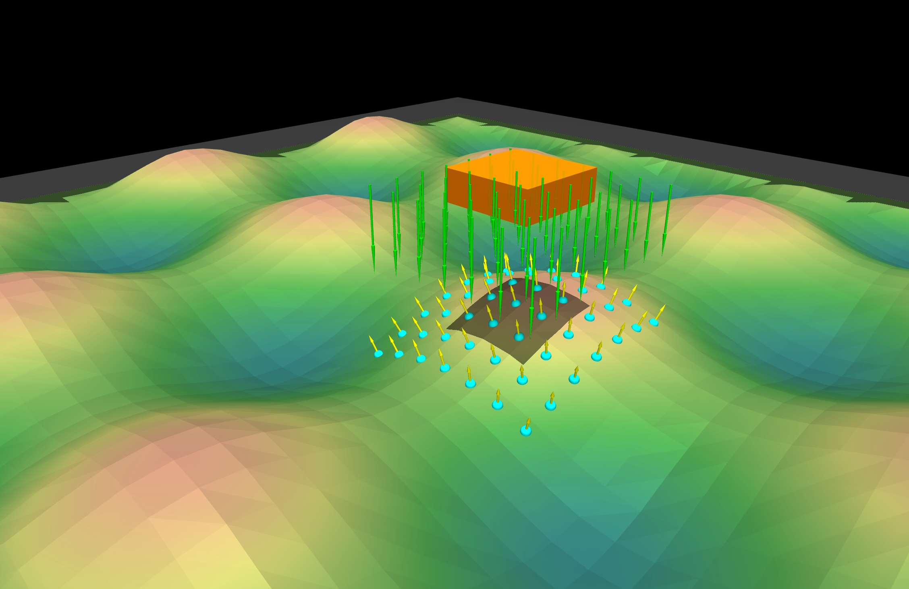

RayCast Sensor#
The RayCast sensor provides GPU-accelerated raycasting for terrain scanning, obstacle detection, and depth sensing. It supports flexible ray patterns, multiple frame attachment options, and configurable alignment modes.
Quick Start#
from mjlab.sensor import RayCastSensorCfg, GridPatternCfg, ObjRef
raycast_cfg = RayCastSensorCfg(
name="terrain_scan",
frame=ObjRef(type="body", name="base", entity="robot"),
pattern=GridPatternCfg(size=(1.0, 1.0), resolution=0.1),
max_distance=5.0,
)
scene_cfg = SceneCfg(
entities={"robot": robot_cfg},
sensors=(raycast_cfg,),
)
# Access at runtime.
sensor = env.scene["terrain_scan"]
data = sensor.data
distances = data.distances # [B, N] distance to hit, -1 if miss
hit_pos = data.hit_pos_w # [B, N, 3] world-space hit positions
normals = data.normals_w # [B, N, 3] surface normals
Ray Patterns#
Ray patterns define the spatial distribution and direction of rays emitted from the sensor frame. Two pattern types are available for different use cases.
Grid Pattern#
Parallel rays arranged in a 2D grid with fixed spatial resolution.
{kind=link}
Note
The grid pattern produces a fixed ground footprint that does not change with sensor height. Ray spacing is defined in world units (meters).
from mjlab.sensor import GridPatternCfg
pattern = GridPatternCfg(
size=(1.0, 1.0), # Grid dimensions in meters
resolution=0.1, # Spacing between rays
direction=(0.0, 0.0, -1.0), # Ray direction (down)
)
Characteristics:
All rays are parallel
Spacing defined in meters
Ground footprint is height-invariant
Good for: height maps, terrain scanning, spatially uniform sampling
Pinhole Camera Pattern#
Diverging rays emitted from a single origin, analogous to a depth camera or LiDAR sensor.
Note
Unlike the grid pattern, the pinhole pattern has a fixed angular field of view. As the sensor moves higher, the ground coverage increases.
from mjlab.sensor import PinholeCameraPatternCfg
# Explicit parameters.
pattern = PinholeCameraPatternCfg(
width=16,
height=12,
fovy=45.0, # Vertical FOV in degrees
)
# From a MuJoCo camera.
pattern = PinholeCameraPatternCfg.from_mujoco_camera("robot/depth_cam")
# From intrinsic matrix.
pattern = PinholeCameraPatternCfg.from_intrinsic_matrix(
intrinsic_matrix=[500, 0, 320, 0, 500, 240, 0, 0, 1],
width=640,
height=480,
)
Characteristics:
Rays diverge from a single point
Coverage defined in angular units (degrees)
Ground footprint increases with height
Good for: depth cameras, LiDAR, perspective sensing
Pattern Comparison#
Aspect |
Grid |
Pinhole |
|---|---|---|
Ray direction |
Parallel |
Diverging |
Spacing unit |
Meters |
Degrees (FOV) |
Height affects coverage |
No |
Yes |
Projection model |
Orthographic |
Perspective |
Frame Attachment#
Rays attach to a frame in the scene via ObjRef.
frame = ObjRef(type="body", name="base", entity="robot")
frame = ObjRef(type="site", name="scan_site", entity="robot")
frame = ObjRef(type="geom", name="sensor_mount", entity="robot")
The exclude_parent_body option (default: True) prevents rays from
hitting the body to which they are attached.
Ray Alignment#
The ray_alignment setting controls how rays orient relative to the frame
when the body rotates.
Mode |
Description |
Use Case |
|---|---|---|
|
Full position and rotation |
Body-mounted sensors |
|
Ignores pitch and roll |
Terrain height maps |
|
Fixed world direction |
Gravity-aligned sensing |
RayCastSensorCfg(
name="height_scan",
frame=ObjRef(type="body", name="base", entity="robot"),
pattern=GridPatternCfg(size=(1.0, 1.0), resolution=0.1),
ray_alignment="yaw",
)
Geom Group Filtering#
MuJoCo geoms can be assigned to groups 0-5. Use include_geom_groups to
restrict which geoms rays can hit.
RayCastSensorCfg(
name="terrain_only",
frame=ObjRef(type="body", name="base", entity="robot"),
pattern=GridPatternCfg(),
include_geom_groups=(0, 1),
)
Output Data#
The sensor returns RayCastData:
@dataclass
class RayCastData:
distances: Tensor # [B, N] distance to hit, -1 if miss
hit_pos_w: Tensor # [B, N, 3] world-space hit positions
normals_w: Tensor # [B, N, 3] surface normals
pos_w: Tensor # [B, 3] sensor frame position
quat_w: Tensor # [B, 4] sensor frame orientation (w, x, y, z)
B is the number of environments and N is the number of rays.
Debug Visualization#
Enable visualization with debug_vis=True:
RayCastSensorCfg(
name="scan",
frame=ObjRef(type="body", name="base", entity="robot"),
pattern=GridPatternCfg(),
debug_vis=True,
)
Examples#
Height Map for Locomotion#
# Dense grid for terrain-aware locomotion.
height_scan = RayCastSensorCfg(
name="height_scan",
frame=ObjRef(type="body", name="base", entity="robot"),
pattern=GridPatternCfg(
size=(1.6, 1.0),
resolution=0.1,
direction=(0.0, 0.0, -1.0),
),
ray_alignment="yaw", # Stay level on slopes
max_distance=2.0,
exclude_parent_body=True,
)
# In observation function.
def height_obs(env: ManagerBasedRlEnv) -> torch.Tensor:
sensor = env.scene["height_scan"]
return sensor.data.distances # [B, N]
Depth Camera Simulation#
# Simulate a depth camera.
depth_cam = RayCastSensorCfg(
name="depth",
frame=ObjRef(type="site", name="camera_site", entity="robot"),
pattern=PinholeCameraPatternCfg.from_mujoco_camera("robot/depth_cam"),
max_distance=10.0,
)
# Reshape to image.
def depth_image(env: ManagerBasedRlEnv) -> torch.Tensor:
sensor = env.scene["depth"]
distances = sensor.data.distances # [B, W*H]
return distances.view(-1, 12, 16) # [B, H, W]
Obstacle Detection#
# Forward-facing obstacle scan.
obstacle_scan = RayCastSensorCfg(
name="obstacle",
frame=ObjRef(type="body", name="head", entity="robot"),
pattern=GridPatternCfg(
size=(0.5, 0.3),
resolution=0.1,
direction=(-1.0, 0.0, 0.0), # Forward
),
max_distance=3.0,
include_geom_groups=(0,), # Filtering to only group 0 geoms
)
Running the Demo#
A demo script is included to visualize the sensor on varied terrain:
# Grid pattern (default)
uv run mjpython scripts/demos/raycast_sensor.py --pattern grid
# Pinhole camera pattern
uv run mjpython scripts/demos/raycast_sensor.py --pattern pinhole
# With yaw alignment
uv run mjpython scripts/demos/raycast_sensor.py --alignment yaw
# Viser viewer (for remote/headless)
uv run python scripts/demos/raycast_sensor.py --viewer viser